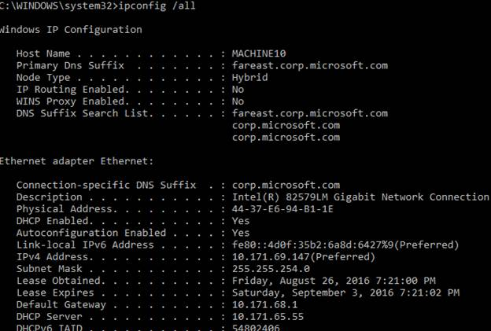

How to send the Wake on Lan in .NET [VB.NET-Visual Studio 2012]
How to send the Wake on Lan in .NET [VB.NET – Visual Studio 2012]
Introduction
This sample demonstrates how to wake up on LAN. For this program to function, your machine must be set up to accept wake-up on LAN requests. The motherboard must support Wake On LAN.
Using the code
Code details:
Main method calls ExecuteWOL with MAC address of the machine which you want to wake up. This class calls the ExecuteWOL method it takes MAC address as input parameter. Please the signature of the Wakeup method below
ExecuteWOL (ByVal MAC As String)
ExecuteWOL method calls generatePacket() method .Create an object of UdpClient calss and call the send method. This class implemented the functionality of broadcasting the packet. For more clarity, see the source code of ExecuteWOL function implementation.
How to get Mac address:
You can get MAC address of the machine by using :>ipconfig /all. And see the physical address as below:

While entering the MAC address of the machine, remove all "-" as below:
4437E694B11E
Please see the below screen shot:

Microsoft All-In-One Code Framework is a free, centralized code sample library driven by developers' real-world pains and needs. The goal is to provide customer-driven code samples for all Microsoft development technologies, and reduce developers' efforts in solving typical programming tasks. Our team listens to developers’ pains in the MSDN forums, social media and various DEV communities. We write code samples based on developers’ frequently asked programming tasks, and allow developers to download them with a short sample publishing cycle. Additionally, we offer a free code sample request service. It is a proactive way for our developer community to obtain code samples directly from Microsoft.